1. 环境的配置与搭建
完成第一个引导扇区启动程序
工具：VirtualBox、Nasm （汇编）
通过硬盘启动自己的操作系统
生成虚拟磁盘：将虚拟文件当做硬盘挂载
diskpart命令：制作自己的虚拟磁盘

- 编写汇编代码

此代码段是存于磁盘引导扇区的系统引导程序。若存于硬盘第一个扇区，则这段代码称为硬盘主引导记录
- 使用
Nasm进行编译
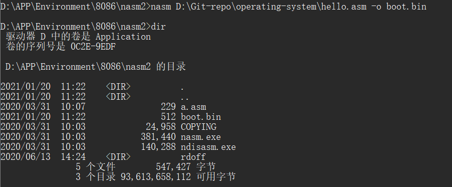
- 使用
dd工具将.bin文件写入磁盘
- 在虚拟机中运行
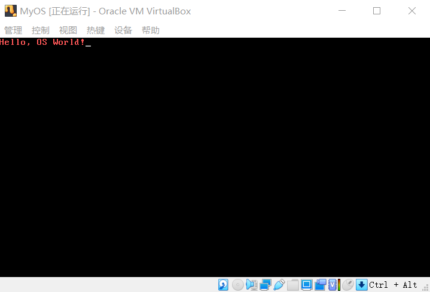
2. 操作系统基础知识
- CPU的组成
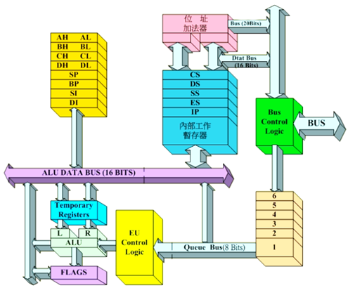
寄存器是CPU内部的信息存储单元，Intel 8086CPU有14个寄存器
IBM 兼容机一般用于指80486及之前的PC机，之后渐渐代之以“标准PC”的说法
Intel 8086是由Intel于1978年设计的16位微处理器芯片，是x86架构的鼻祖。它以8080和8085的设计为基础，地址总线扩充为20位，可直接寻址1MB的存储空间，且取指令和执行是同步的通用寄存器：
AX，
accumulate register：累加器
BX，based register：基地址寄存器
CX，count register：计数器
DX，data registered：数据寄存器
段寄存器：CS，
code segment：代码段
DS，data segment：数据段
SS，stack segment：栈段寄存器
ES，extra segment：附加段寄存器
指令指针寄存器：IP，
instructor point
指针寄存器：SP，
stack point：堆栈指针寄存器
BP，base point：基础指针
变址寄存器：SI，
source index：源变址寄存器
DI，destination index：目的变址寄存器
标志寄存器：PSW，
program state word：程序状态字PSW的常用标志 作用 OF， overflow flag溢出标志位 DF， direction flag方向标志位 IF， interrupt flag中断标志位 TF， trap flag陷阱标志位 SF， sign flag负号标志位 ZF， zero flag零值标志位 AF， auxiliary carray flag辅助进位标志位 PF， parity flag奇偶标志位 CF， carry flag进位标志位
代码段和数据段（逻辑概念，在内存中）
8086的分段表示
分段机制：通过改变CS寄存器的数字去改变想要推进的程序，程序的加载可以通过一个管理程序进行调度
操作系统OS要做什么？
1）需要让机器做事情
2）开机后接管CPU的控制权
3）需要接收和发送消息给硬件
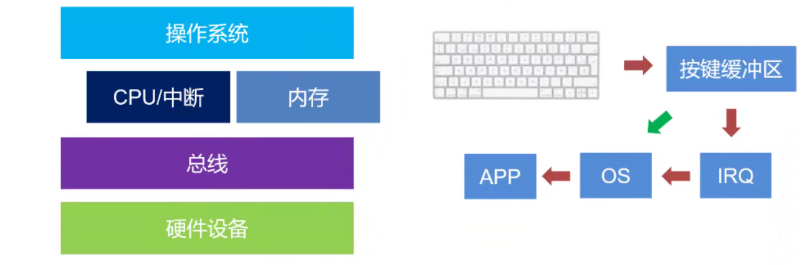
4）需要管理和调度应用
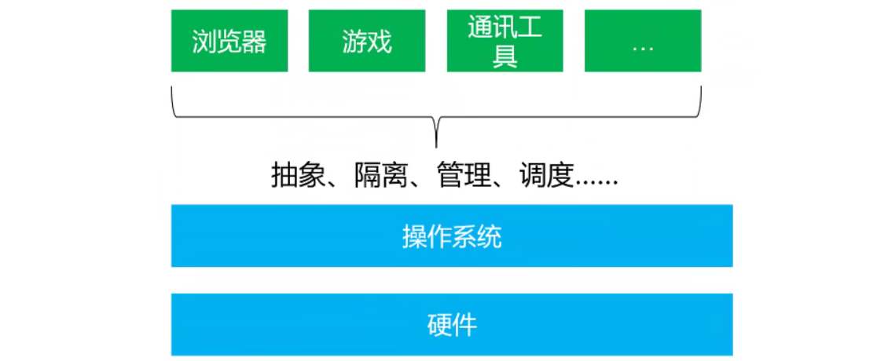
5）需要让用户可以参与管理
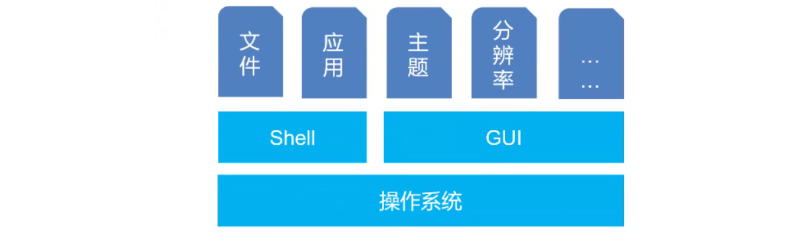
A group of program that controls the execution of application programs. Acts as an interface between applications and hardware
计算机启动过程
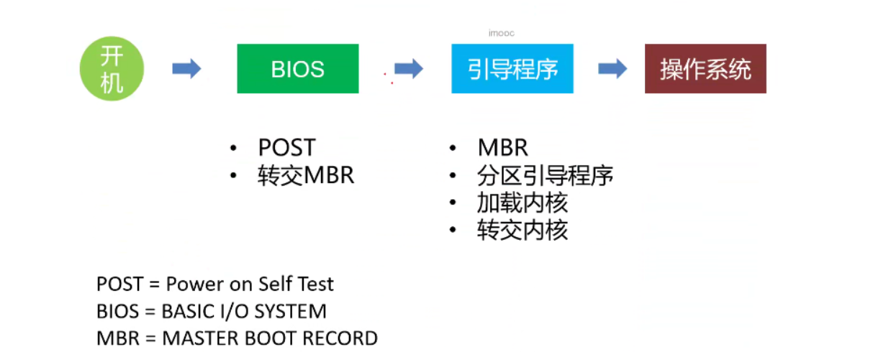
开机后OS需要接管CPU的控制权，但在OS运行之前是BIOS在管理计算机，之后由OS接管

BIOS 初始化
- 加电自检 POST，
power on self test：固化在主板的BIOS，检查硬件的好坏，内存地址为0fff:0000
打开电源，BIOS开始自检，然后出发19号中断，在处理19号中断时，BIOS检测电脑是否具有软盘、硬盘或是固定磁盘，如果有任何可以使用的磁盘，就把磁盘的第一个扇区（512B）加载到内存
BIOS加载OS
- MBR将自己复制到内存地址
0000:0600处，然后开始执行
MBR（主引导扇区）位于硬盘的 0 磁道 0 柱面第1扇）区，该磁道均为隐含扇区，普通的磁盘访问命令无法访问，一共512个字节 - 在主分区表中搜索标志为活动的分区，如果发现没有活动分区或有不止一个活动分区，则转停止
- 将活动分区的第一个扇区读入内存地址
0000:7c00处 - 检查 (WORD)
0000:7dfe是否等于0xaa55，若不等于则显示 “Missing Operating System” 然后停止 - 跳转到
0000:7c00处继续执行特定系统的启动程序
- 加电自检 POST，
实模式：CPU复位或加电的时候以实模式启动，处理器以实模式工作。在实模式下，内存寻址方式和8086相同，由基地址加上偏移地址形成20位的物理地址，最大寻址空间1MB，最大分段64KB。在实模式下，所有的段都是可以读、写和可执行的。
3. 操作显存数据
实模式下用汇编显示文字
显示的原理：屏幕上的内容=显存中的数据。
显卡控制的最小单位是像素，一个像素对应屏幕上一个点。专门用来显示字符的工作方式称为文本模式，文本模式和图形模式是显卡的基本模式（PC在加电自检后系统会初始化为80 × 25的文本模式）
显存的地址空间 A0000h-BFFFFh 共128K空间。其中 B8000h-BFFFFh 共32K的空间是80 × 25彩色字符模式显示缓冲区。80×25彩色字符模式显示缓冲区的结构：
向这个地址空间写入数据，写入的内容将立即出现在显示器上
在80×25彩色字符模式下，显示器可以显示25行，每行80个字符，每个字符可以有256种属性（背景色、前景色、闪烁、高亮等组合信息）
一个字符在显示缓冲区中要占两个字节，分别存放字符的ASCII码和属性，显示缓冲区分为8页，每页4KB，显示器可以显示任意一页的内容。通常情况下B8000H - B8F9F中的4000个字节的内容将出现在显示器上
BIOS有自动寻找硬件功能，且BIOS在实际的物理内存中是有布局的
实验：
- 编写汇编代码
- 编译
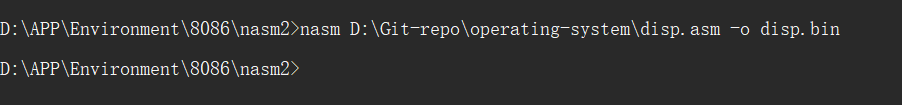
- 写入磁盘
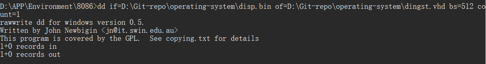
- 在虚拟机中运行
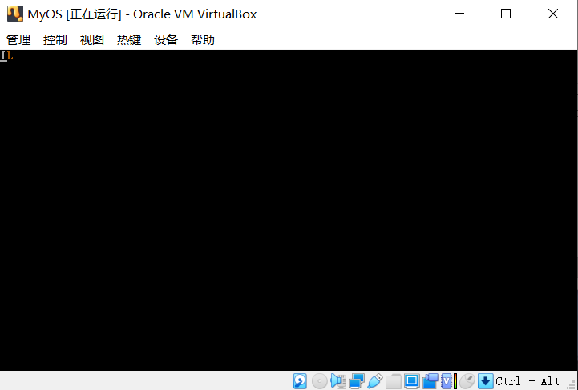
4. 从硬盘引导
- 目前的硬盘一般分为 HDD（Hard Disk Drive，传统的磁碟型机械硬盘）和 SSD（Solid State Disk，固态硬盘）
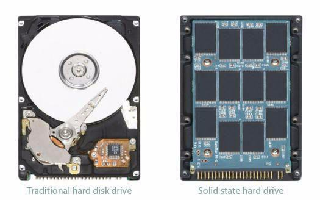
- HDD：Hard Disk Drive（硬碟），即传统机械硬盘。由盘片、磁头、转轴、控制电机等部分组成。工作时盘片转动，磁头定位在盘片的指定位置上进行读写操作。传统硬盘的优势在于容量大、成本低，寿命也相对较长，适合进行大容量的数据写入；但缺点也非常明显，比如体积重量大、发热量大、速度慢、不抗震、噪音大等等。
- SSD：Solid-State Drive（固态硬盘）。一般使用 NAND 闪存制成。由于不存在机械部件，所以稳定性、噪音、发热量、抗震性都要比传统机械硬盘更好，读写速度也更快。当然，闪存的造价较高，所以 SSD 的价格也更高。
磁盘结构
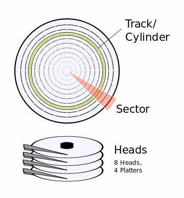
- 磁道
Track。当磁盘旋转时，磁头若保持在一个位置上，则每个磁头都会在磁盘表面划出一个圆形轨迹，这些圆形轨迹就叫做磁道 - 柱
Cylinder。在有多个盘片构成的盘组中，由不同盘片的面，但处于同一半径圆的多个磁道组成的一个圆柱面 - 扇区
Sector。磁盘上的每个磁道被等分为若干个弧段，这些弧段便是硬盘的扇区。硬盘的第一个扇区，叫做引导扇区 - 磁头
Head。硬盘读取数据的关键部件，它的主要作用就是将存储在硬盘盘片上的磁信息转化为电信号向外传输，而它的工作原理则是利用特殊材料的电阻值会随着磁场变化的原理来读写盘片上的数据，磁头的好坏在很大程度上决定着硬盘盘片的存储密度 - 盘片
Platter。硬盘中承载数据存储的介质。硬盘盘片是以坚固耐用的材料为盘基，将磁粉附着在铝合金（新材料也有用玻璃）圆盘片的表面上，表面被加工的相当平滑。这些磁粉被划分成称为磁道的若干个同心圆，在每个同心圆的磁道上就好像有无数的任意排列的小磁铁，它们分别代表着 0 和 1 的状态。当这些小磁铁受到来自磁头的磁力影响时，其排列的方向会随之改变。利用磁头的磁力控制指定的一些小磁铁方向，使每个小磁铁都可以用来储存信息。硬盘是由多个盘片叠加在一起，互相之间由垫圈隔开
CPU不会直接和硬盘打交道，而是和IO接口和硬盘控制的主寄存器打交道
Data寄存器、Error寄存器、Device寄存器（给出硬盘状态）…
CHS：CHS寻址模式将硬盘划分为磁头（Heads）、柱面(Cylinder)、扇区(Sector)
LBA：用28 bit来描述一个扇区
读取数据步骤
1）先选择通道，往该通道上的
sector count寄存器写入待操作的扇区数 2）往该通道的3个LBA寄存器写入扇区的起始地址
3）往
device寄存器写入LBA的24-27位，设为LBA，并设置dev表明是从盘还是主盘 4）往
command寄存器写命令 5）检查status寄存器
6）读入数据
- 实验
将第二个扇区里面的内容加载进入内存
- 编写汇编代码
mbr.asm
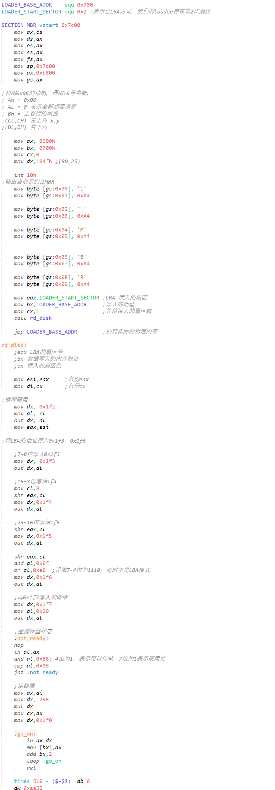
loader.asm
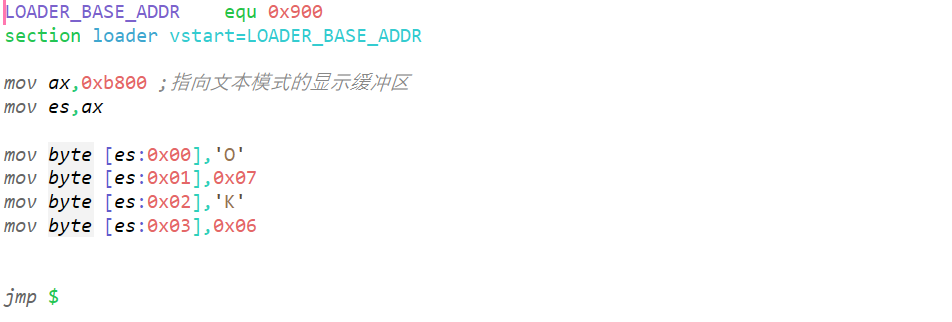
- 使用
Nasm进行编译
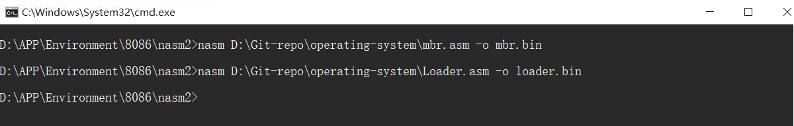
- 写入磁盘
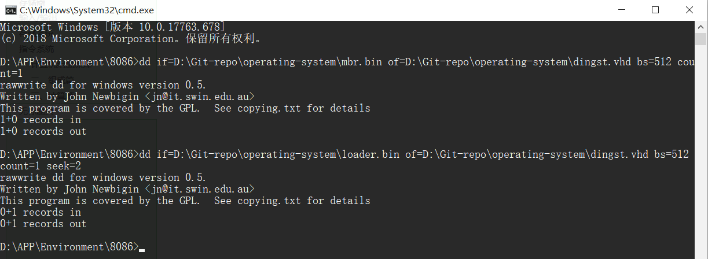
- 在虚拟机中运行
突破了512字节！
5. 保护模式入门
- 在80286以前，CPU只有实模式，最多能够访问1M的内存空间。
- 可以任意访问内存，操作系统和用户程序实际上做不到内存的隔离
- 用户程序访问的逻辑地址实际上就是物理地址
- 用户程序可以随意修改段基址
- 随着CPU的发展，CPU的地址线变为32根，至少可以访问到4G的内存空间。实模式下的内存地址计算方式就已经不再适合了。所以就引入了保护模式，实现更大空间的，更灵活也更安全的内存访问。
- 为了保证向下兼容，80286及以后的CPU首先进入实模式，然后通过切换机制再进入到保护模式。
- 保护模式下把关于内存段的限制信息放在一个叫做全局描述符表(GDT)**的结构里。全局描述符表中含有一个个表项，每一个表项称为段描述符。**
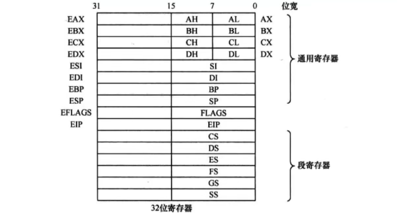
- 全局描述符表位于内存中，CPU用专门的寄存器指向它。这个专门的寄存器是GDTR（一个48位的寄存器）,专门用来存储 GDT 的内存地址及大小。
内核：内核是连接操作系统和硬件和软件的桥梁，它掌控着计算机中的一切资源。
未完待续